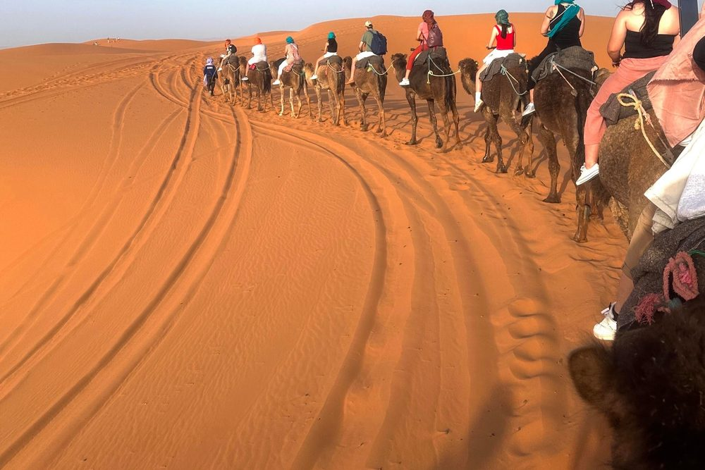
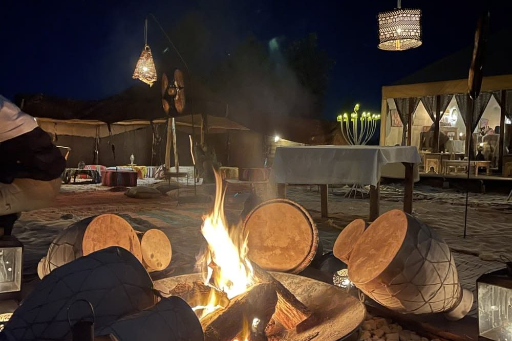

Many travellers imagine Morocco as a hot country all year round. In December and January the reality is more interesting: sunny days, cool evenings, snow on the High Atlas and very cold nights in the Sahara. Winter is one of the best seasons for the medinas and the desert, as long as you know what to expect and pack the right clothes.
In this guide we share the real temperatures region by region, the best routes for a winter trip, what changes in the desert, the holidays of the season and our packing list, based on our years of driving guests across the country in winter.
The weather in December and January
Morocco has very different climates within a few hours of driving. The coast is mild, the imperial cities are cool, the mountains can be snowy and the desert is warm by day but freezing at night. These are typical average temperatures:
| Place | Daytime | Night | What to expect |
|---|---|---|---|
| Marrakech | 18–20 °C | 5–7 °C | Sunny, blue skies, cold mornings |
| Fes and Meknes | 15–17 °C | 4–5 °C | Cooler, some rainy days |
| Chefchaouen | 14–16 °C | 5–7 °C | The rainiest region, green and quiet |
| Tangier | 16–17 °C | 8–10 °C | Mild but windy and sometimes wet |
| Essaouira | 18–20 °C | 9–11 °C | Mild, often windy |
| Ouarzazate | 16–18 °C | 0–3 °C | Dry and sunny, frost at night |
| Merzouga (Sahara) | 17–20 °C | 0–4 °C | Clear skies, very cold nights |
| High Atlas | 5–10 °C | Below 0 °C | Snow on the peaks and high villages |
The days are short: the sun sets around 5:30 PM, so we plan the long drives early in the morning and keep the light for the best places.
Is winter a good time to visit Morocco?
Yes. For many of our guests it is the favourite season. The light is soft and clear, the skies are rarely cloudy, the medinas are pleasant for walking and the desert is never too hot. Here are the pros and cons:
| Advantages | Disadvantages |
|---|---|
| Pleasant days for walking in the cities | Cold nights, especially in the desert and mountains |
| Clear skies and beautiful light for photos | Short days (about 10 hours of light) |
| Snow on the Atlas, a rare view in Africa | The Tizi n’Tichka pass can close for a few hours after snow |
| Fewer tourists in early December and in January | Christmas and New Year week is busy and more expensive |
Compare with the other seasons in our guide to the best time to visit Morocco.

The Sahara in winter
The desert in winter is magical: no heat, perfectly clear skies, and the best stars of the year. But the nights are cold, often close to 0 °C. This is what we recommend:
- Choose a good camp. Luxury camps have thick blankets, private bathrooms with hot water and, in many cases, heated tents. Read our comparison of luxury and standard desert camps.
- Dress in layers for the sunset camel ride: it gets cold quickly as soon as the sun disappears.
- Sit by the fire. Evenings at the camp are spent around the campfire with tea and Berber drums.
- Get up for the sunrise. Bring a hat and gloves for the climb up the dune: it is the coldest moment, and the most beautiful.

Snow in the Atlas Mountains
Between December and March, snow often covers the peaks of the High Atlas, and sometimes the Middle Atlas around Ifrane and Azrou. It is one of the most surprising sights of a winter trip: snowy summits above palm groves and red kasbahs.
- Tizi n’Tichka: the pass between Marrakech and Ouarzazate (2,260 m) is open almost all winter, but it can close for a few hours after heavy snow. Our drivers check the conditions every morning and adapt the timing.
- Oukaïmeden: about 75 km from Marrakech, a small ski area with snow in good winters, perfect for a day trip.
- Ifrane and the cedar forest: on the road between Fes and Merzouga, the “Switzerland of Morocco” is beautiful under snow, and the Barbary macaques live in the forest near Azrou.
The best routes for a winter trip
Marrakech and the desert (3 to 5 days)
The most popular winter route: over the snowy Atlas, Ait Ben Haddou, the Dades and Todra gorges and one or two nights in Merzouga. See our 3-day tour from Marrakech or the 4-day tour to Merzouga.
From Fes to Marrakech through the Sahara
Perfect if you arrive in the north: the cedar forest, the Ziz Valley, the dunes and the kasbahs of the south. See our 3-day tour from Fes to Marrakech.
A full tour of Morocco (7 to 10 days)
Winter is ideal to combine the imperial cities, the desert and the coast without heat. Read our 7-day and 10-day itineraries.
Christmas, New Year and the holidays of the season
Morocco is a Muslim country, so Christmas is not a public holiday: shops, monuments and transport work normally on 25 December. Many hotels and riads still prepare a special dinner for their guests, and there are churches in Marrakech, Fes, Rabat and Tangier.
New Year is a very popular time to travel, especially to the desert. Our festive tour includes a Mechoui dinner, music around the fire, a fire show and the first sunrise of the year over the dunes: see New Year in the Sahara and our article on Christmas and New Year in the Sahara.
Public holidays in January
1 January (New Year), 11 January (Independence Manifesto Day) and 14 January (Yennayer, the Amazigh New Year). Banks and offices close, but tours, hotels and most shops in tourist areas stay open.
What to pack for Morocco in winter
- A warm jacket or a down jacket for the evenings and the desert
- A fleece or a warm sweater, and several thin layers
- Hat, gloves and a scarf for the sunrise on the dunes
- Thick socks and comfortable closed shoes
- Sunglasses and sunscreen: the winter sun is strong
- A light rain jacket if you visit the north (Fes, Chefchaouen, Tangier)
- Clothes that cover shoulders and knees, as in every season: see what to wear in Morocco
Riads in the medinas can be chilly, as they are built to stay cool in summer. Ask whether the room has heating, and don’t hesitate to ask for an extra blanket.
Our tips for a winter trip
- Book Christmas and New Year early: the best desert camps fill up quickly for the festive week.
- Start early: with short days, an early departure gives you the best light at the kasbahs and the dunes.
- Take a private tour: your driver can adapt the route if the pass is closed or the weather changes.
- Enjoy the hammam: nothing is better after a cold day. Read our hammam guide.
Frequently asked questions
Is it cold in Morocco in December?
The days are pleasant, around 15–20 °C in most cities, but the nights are cold: 5 °C in Marrakech and close to 0 °C in the desert and the mountains. Bring warm clothes for the evenings.
Can I visit the Sahara in winter?
Yes, winter is an excellent time for the desert: sunny days, clear skies and beautiful stars. Just choose a camp with good blankets or heated tents and dress warmly for the night.
Does it snow in Morocco?
Yes. Snow is common on the High Atlas and sometimes in the Middle Atlas around Ifrane between December and March. It rarely snows in the cities or the desert.
Is Christmas celebrated in Morocco?
It is not a public holiday, but many hotels organise a dinner for their guests, and you can attend Mass in the churches of the big cities. Many travellers choose to spend Christmas or New Year in the desert.
Is the road from Marrakech to the desert open in winter?
Yes. The Tizi n’Tichka pass is open almost every day of winter. After heavy snow it can close for a few hours, and our drivers adapt the departure time.
Keep reading: The best time to visit Morocco · Before your Sahara trip · Christmas and New Year in the Sahara